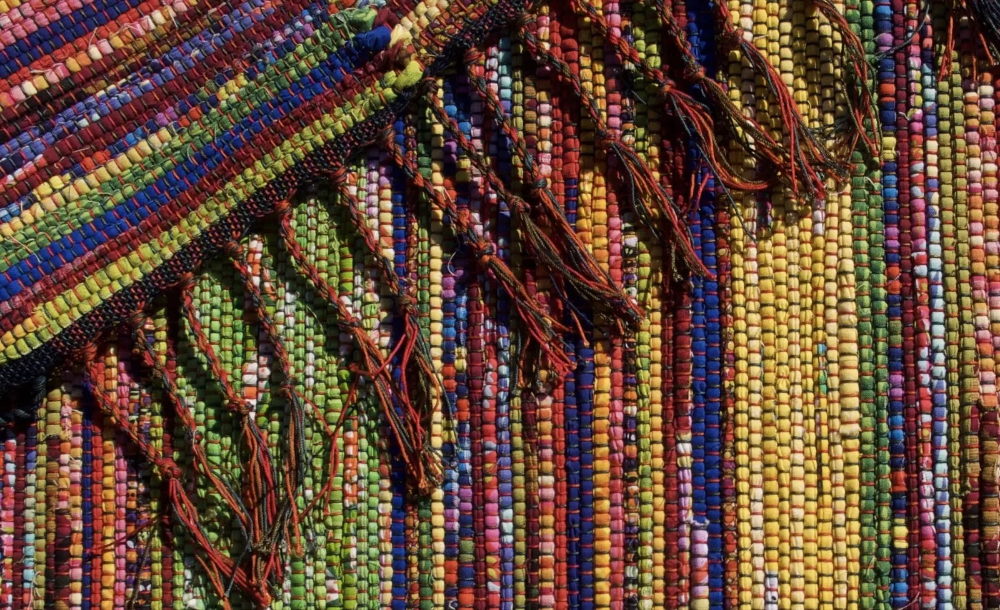
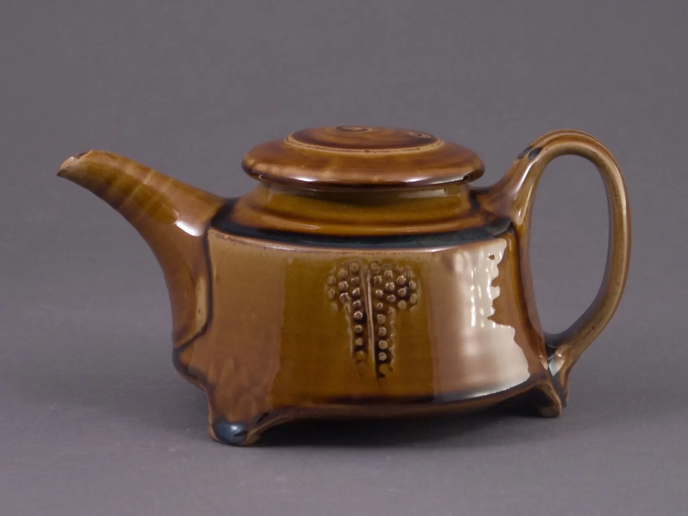
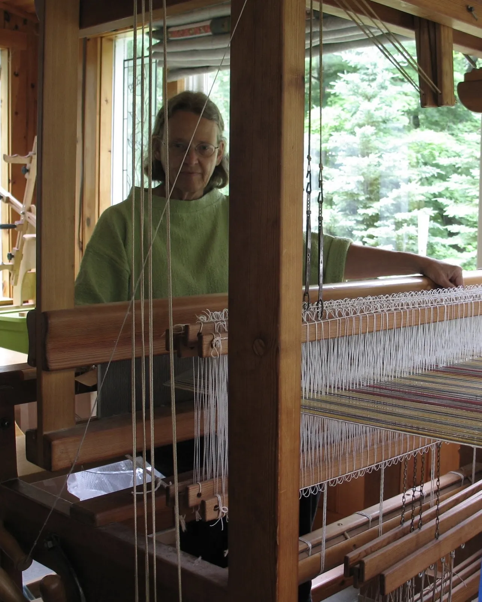
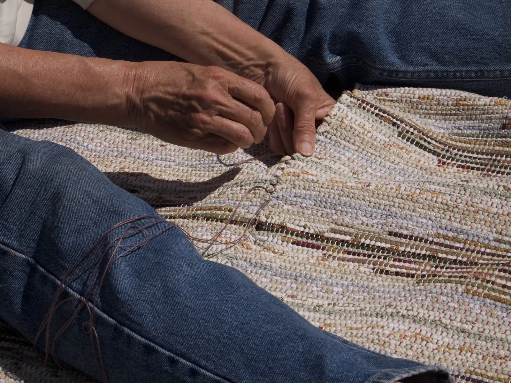
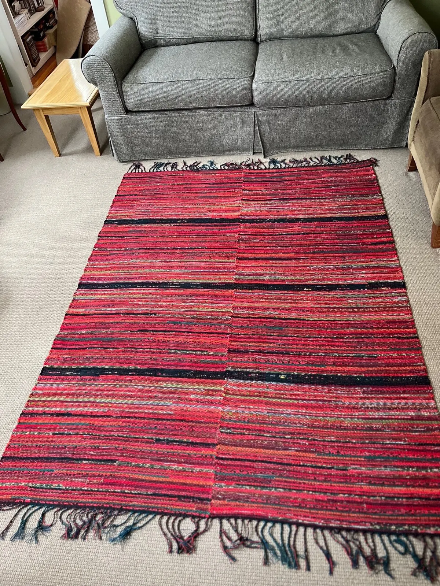
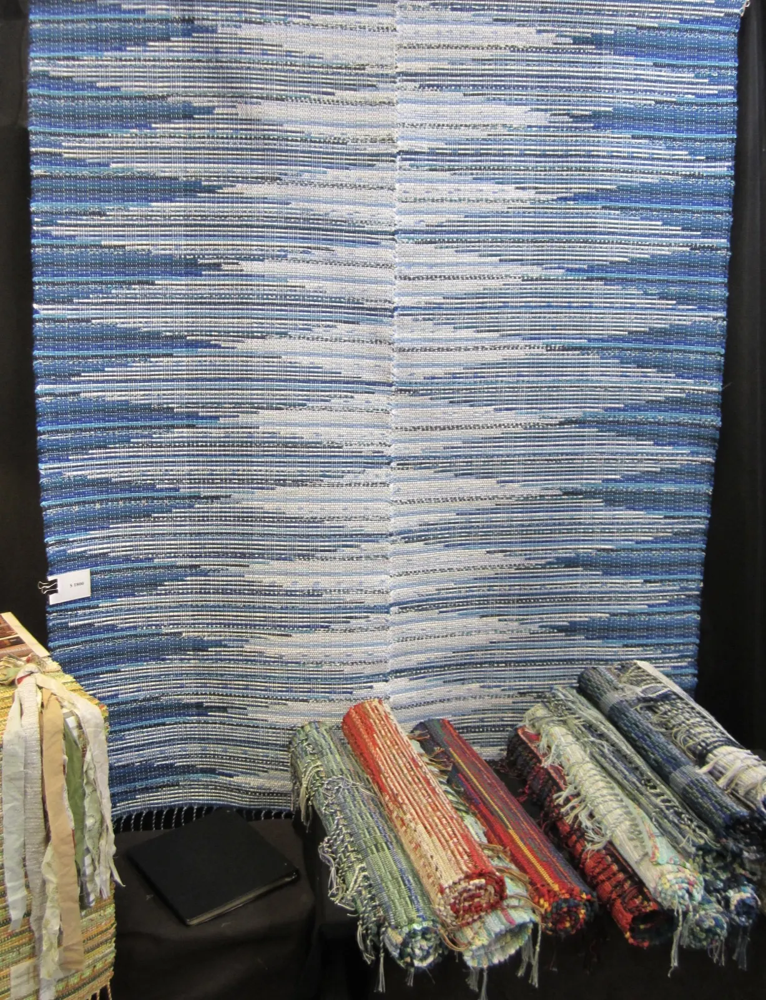
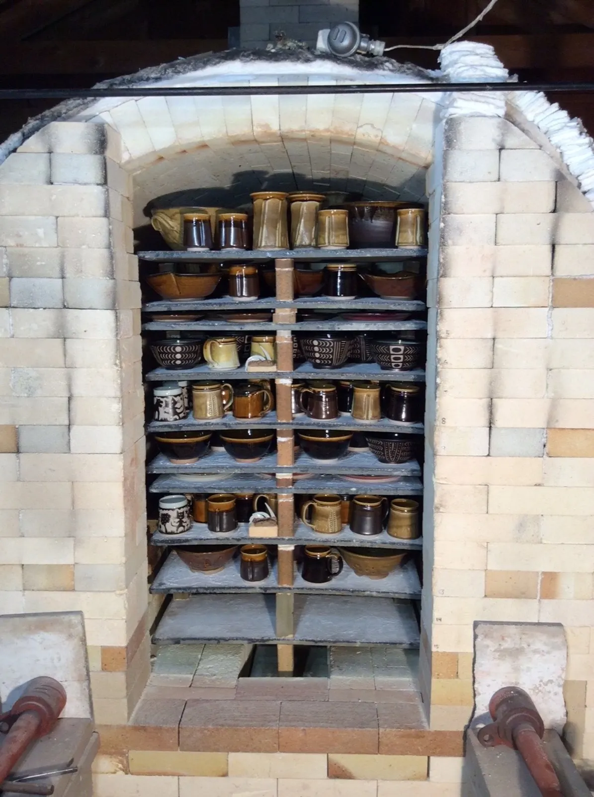
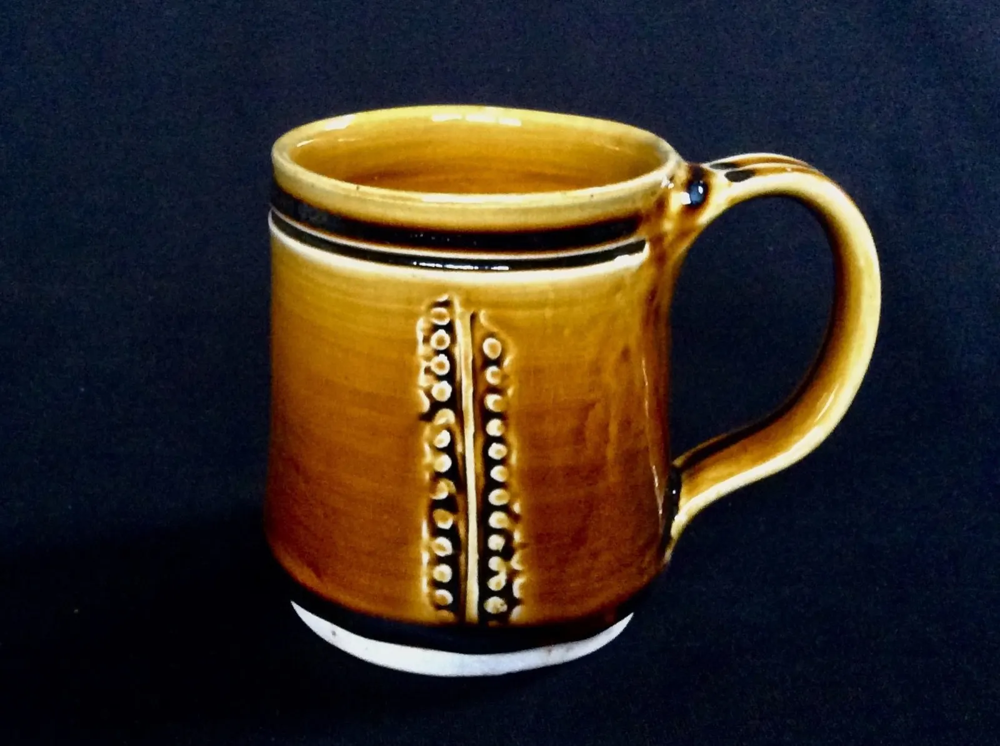
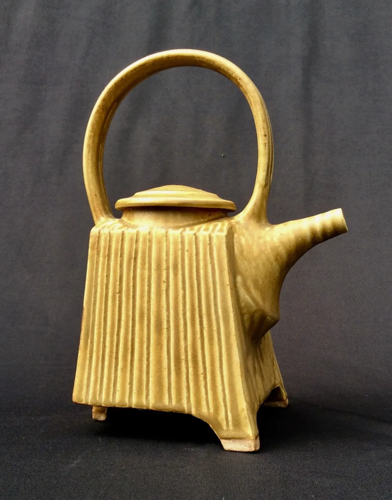
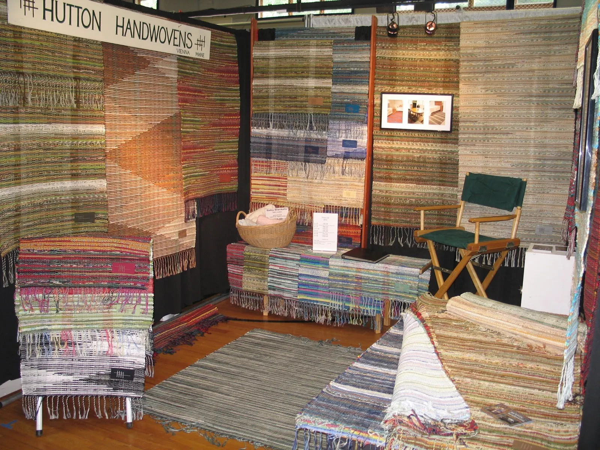

Hutton Studios, Hillary and Mark Hutton
One-of-a-kind rag rugs, handwoven in Maine.


Hillary weaves reversible cotton rag rugs, each one finished with a hand-twisted fringe. Mark Hutton's porcelain and stoneware, glazed with wood ash and Maine clay, is available through Hillary.
Or write to hutton@huttonstudios.com
- Weaving since 1981
- Rugs on a 100% cotton warp
- Reversible and machine washable
- Wood-ash and Maine clay glazes


Hillary Hutton, at the loom since 1981.
I began weaving a line of women's sportswear. In the mid-80s I added handwoven baby items, sold through children's stores. For the last decade I have specialized in one-of-a-kind rag rugs, working with individuals and interior design galleries to match colors and create designs that fit their needs.
How the rugs are made
- Warp
- 100% cotton.
- Weft
- Cotton and cotton-blend fabrics, hand cut to a 1" width and pre-washed.
- Reversible
- The strips are folded right side out as I weave, so both faces are finished.
- Care
- Wash in a standard washer, then line dry. They will not shrink.
- Finish
- A hand-twisted decorative fringe on every rug.


A rug in your colors.
Hillary works with individuals and interior design galleries to match colors and create designs that fit their needs. Tell her what you have in mind.
Ask about a rugMark Hutton's porcelain and stoneware.
Pottery was Mark's occupation for more than 40 years. He worked in high-fired porcelain and stoneware, mostly wheel thrown, with some slab-built work, fired in a 50 cu. ft. propane kiln.
- Wood ashAbout half of his glazes used wood ash as their flux, which gives a distinctive look.
- Maine clayTwo glazes were 70% Maine clay that we dug locally.
- TemmokuA black and brown Temmoku glaze is also available.
- Copper RedFor past customers: very little is still available.
Vases, pitchers and bowls of many sizes aren't pictured here. If you are interested in any of Mark's work, contact Hillary.
Ask Hillary about the pottery


Come see the work in person.
The best way to see our work is at one of the shows we attend. The 2026 dates aren't posted yet: call or email Hillary to find out where the rugs and pottery will be next, or to ask about a piece.

Past shows include the League of NH Craftsmen's Fair in Sunapee, the Lovell Arts and Artisans Fair, and the Common Ground Fair in Unity, Maine.